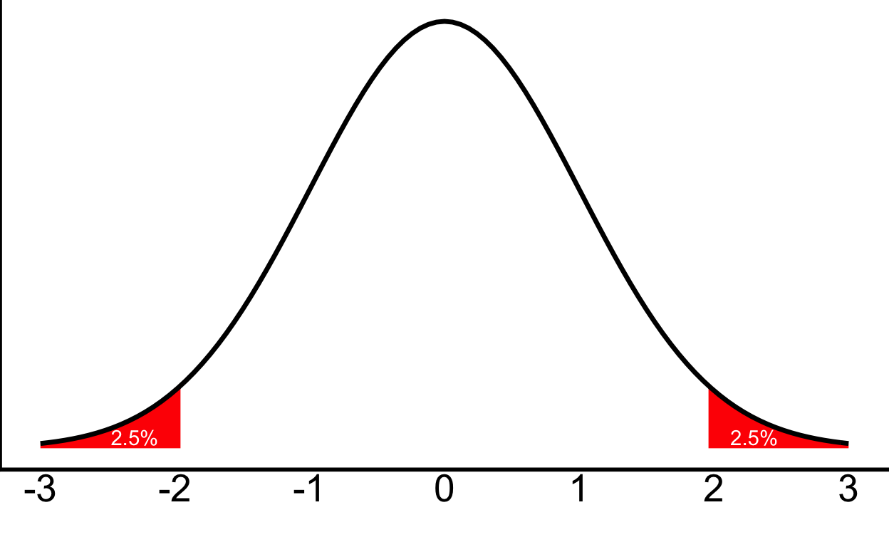
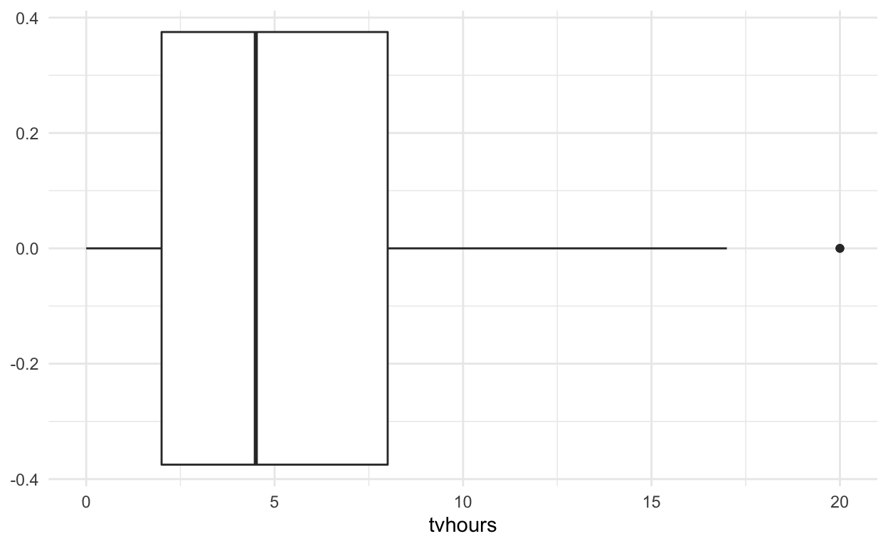
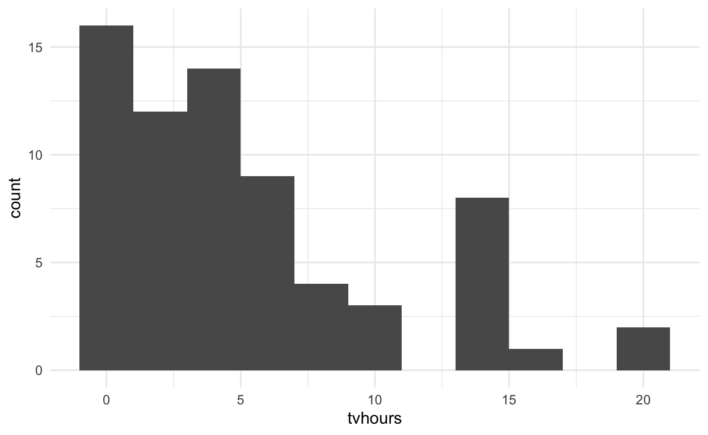

Completed exercises for the fourth lab
This document is meant to be used to practice after you have completed the tutorial for today’s lab. Make sure to put your name as the author of the document, above!
If you would like to refer to the tutorial while also working on this document, open the HTML version of the tutorial (after closing it in RStudio) in a web browser to refer to the code. (In RStudio.Cloud, browse to the file in the Files pane, click on it, and click “View in Web Browser”.)
If you intend to work on both simultaneously, there are instructions on the wiki on how to do so.
You may also want to refer to past labs. Don’t forget that previous labs are linked to on the main labs website.
In the tutorial, you put some of the work we did in class into practice in exploring a hypothesis test. Instead of using the friends data we focused on in the tutorial, we’ll be using some real data for this example.
I invite you to turn in this document on Brightspace, where I will provide some basic feedback. As always, a version of these exercises with my answers will be posted at the end of the week to the lab website: https://faculty.bard.edu/~jdainerbest/psy-203/labslist.html
I will again encourage you to do two things as you work through this document: (1) Save it frequently! Hit the disk image above to save, hit Command/Ctrl and s, or go to the File menu and click save. When the document is saved, the title of it will go from red to black. (2) Practice Knitting the document by hitting the Knit button. You can do it now—it’ll create an HTML file in the folder where this file lives. Knitting will both help to identify problems and provide a complete document for me to review.
Run the following code chunk to load necessary packages for these exercises.
library(tidyverse)
# tidyverse loads these:
# library(dplyr)
# library(ggplot2)We’ll return to importing new data next week—for today, just run the following chunk to load the data.
tvfriends <- structure(list(tvhours = c(4, 1, 0, 0, 5, 4, 0, 0, 15, 8, 2,
4, 0, 5, 4, 3, 7, 5, 14, 0, 6, 3, 0, 8, 0, 1, 10, 14, 15, 6,
4.5, 17, 7, 10, 7, 3, 2, 14, 5, 5, 2, 2, 2, 7, 7, 4, 7, 10, 3,
5, 20, 14, 1, 8, 3, 7, 0.5, 8, 3, 1, 20, 2, 1, 15, 14, 5, 1,
0, 4), gender = c("female", "female", "male", "female", "female",
"female", "female", "non-binary", "female", "male", "female",
"female", "agender", "male", "male", "female", "female", "female",
"female", "female", "female", "male", "male", "female", "male",
"male", "female", "male", "female", "male", "male", "female",
"female", "female", "male", "male", "female", "female", "non-binary",
"male", "female", "male", "female", "male", "female", "female",
"male", "male", "female", "male", "female", "female", "female",
"female", "female", "female", "female", "female", "female", "female",
"male", "female", "male", "female", "male", "female", "female",
"male", "male")), row.names = c(NA, -69L), class = c("tbl_df",
"tbl", "data.frame"))As you did in the tutorial, you’re going to walk through the five steps of hypothesis-testing, calculate the z-score, determine the cut-off value, and get a p-value.
Take a look at the structure of your data using the str() function or by clicking on the data in the Environment pane.
str(tvfriends)
tibble [69 × 2] (S3: tbl_df/tbl/data.frame)
$ tvhours: num [1:69] 4 1 0 0 5 4 0 0 15 8 ...
$ gender : chr [1:69] "female" "female" "male" "female" ...Write the research and null hypotheses, and then frame them in terms of means.
Research hypothesis: this person has a different tv-watching habit than other Bard students
Null hypothesis: this person is no different from other Bard students
Statistical framing:
Research hypothesis: \(\mu_{\mathrm{this~person's~tv~hours}}\neq\mu_{\mathrm{Bard~students'~tv~hours}}\)
Null hypothesis: \(\mu_{\mathrm{this~person's~tv~hours}}=\mu_{\mathrm{Bard~students'~tv~hours}}\)
Before we continue: what’s your hypothesis? Do you think 0 hours fits with most Bard students?
Describe the z-distribution.
The z-distribution is normally-distributed and symmetrical, and has a mean of 0 and an SD of 1.

First, what cutoff do you expect for a two-tailed distribution of z-scores?
I expect to see a cutoff of \(\pm1.96\)
Then, find the code from the tutorial. Run it here.
qnorm(c(.025, .975)) %>% round(digits = 2)
[1] -1.96 1.96Plot a boxplot of the data, and a histogram.
ggplot(tvfriends, aes(x = tvhours)) +
geom_boxplot() +
theme_minimal()
ggplot(tvfriends, aes(x = tvhours)) +
geom_histogram(binwidth = 2) +
theme_minimal()
Remember, the question was “How many hours of Netflix/Hulu/TV do you watch per week?” Do any of the data seem unreasonable? Should you filter it? Describe the histogram.
Totally reasonable values. I wouldn’t filter anything. The histogram is not normal; there’s an apparent floor effect (a bunching up of values around the bottom end).
Calculate the mean and standard deviation, and save them. Calculate your z for someone who watches 0 hours of TV a week. (x = 0)
meantv <- mean(tvfriends$tvhours)
sdtv <- sd(tvfriends$tvhours)
z <- (0 - meantv) / sdtv
z
[1] -1.103732Based on the cut-off defined in Step 3, should we reject the null?
No, this is a perfectly reasonable value of -1.10. You cannot reject the null.
What conclusion should you draw based on that?
Watching no TV each week is perfectly normal behavior for Bard students. We shouldn’t assume that doing so is statistically significant.
Try just running the pnorm() function on the z-value. Then, below the code chunk, explain what percentile this person is in.
pnorm(z)
[1] 0.1348546This person is in the 13th percentile—low, but not by much.
Their actual p-value:
pnorm(z, lower.tail = TRUE) + pnorm(-z, lower.tail = FALSE)
[1] 0.2697093So, for this person, \(p=\) 0.27.
Would that score (0 tvhours) be statistically significant if we’re only interested in students who watch significantly less TV than other Bard students? Just write the responses below this line, and use code as necessary.
Research hypothesis: this person watches less TV than other Bard students
Null hypothesis: this person watches more or the same amount of TV as other Bard students
Statistical framing:
Research hypothesis: \(\mu_{\mathrm{this~person's~tv~hours}}<\mu_{\mathrm{Bard~students'~tv~hours}}\)
Null hypothesis: \(\mu_{\mathrm{this~person's~tv~hours}}\ge{}\mu_{\mathrm{Bard~students'~tv~hours}}\)
The distribution is the same as above.
I expect to see a cutoff of -1.64
qnorm(.05) %>% round(digits = 2)
[1] -1.64We’ve already done this, and it does not change.
z
[1] -1.103732Based on the cut-off defined in Step 3, we still don’t reject the null. Watching no TV each week is still normal behavior for Bard students. We shouldn’t assume that doing so is statistically significant.
pnorm(z, lower.tail = TRUE)
[1] 0.1348546For this person’s score, \(p=.13\).
If you have more time, want to practice, or are just interested, this is another exercise of the same vein; we’ll return to this data.
This is a summary of data from Pro Publica, an investigative journalism organization. You can read more about the data here: https://www.propublica.org/article/so-sue-them-what-weve-learned-about-the-debt-collection-lawsuit-machine
| Type | Mean | SD |
|---|---|---|
| Auto | 109.52 | 236.87 |
| Collection Agency | 39.26 | 93.39 |
| Debt Buyer | 316.98 | 867.30 |
| Government | 121.04 | 190.46 |
| High-Cost Lender | 46.00 | 53.49 |
| Insurance | 128.13 | 218.79 |
| Major Bank | 690.02 | 1440.31 |
| Medical | 0.51 | 8.91 |
| Misc | 36.92 | 56.82 |
| Misc Lender | 69.80 | 158.43 |
| Other | 23319.00 | 5151.45 |
| Utility | 53.14 | 55.50 |
Essentially, these data show how often (over 13 years from 2001-2014) the owners of individuals’ debt in Miami-Dade County, Fl sued those individuals. It’s sorted by type of debt.
Your task: In 2000, debt buyers (firms that buy debt to collect) sued individuals 59.8 times. This is your x. Follow the steps of hypothesis-testing to determine whether this is significantly different from the norm over the subsequent 13 years, using a z-test and the above information. This time, use a cut-off of \(p=.01\), so there is only a significant difference if \(p<.01\).
Research hypothesis: in 2000, debt buyers sued debtors either more or less than they did in the 13 years after Null hypothesis: in 2000, debt buyers did not sue debtors differently
Statistical framing:
Research hypothesis: \(\mu_{\mathrm{debt~buyers~2000}}\neq\mu_{\mathrm{debt~buyers~2001-2014}}\) Null hypothesis: \(\mu_{\mathrm{debt~buyers~2000}}={}\mu_{\mathrm{debt~buyers~2001-2014}}\)
The distribution is the same as above; we’re still using a z-distribution
I expect to see a cutoff of \(\pm2.57\) because this is a two-tailed test with \(p<.01\)
qnorm(c(.005, .995))
[1] -2.575829 2.575829
z <- (59.8 - 316.98) / 867.3
z
[1] -0.2965295Based on the cut-off defined in Step 3, we definitely don’t reject the null. While there is a clear increase in the mean, the standard deviation is so large that it doesn’t significantly differ according to this test—it’s lower, but not hugely so.
pnorm(z, lower.tail = TRUE) + pnorm(-z, lower.tail = FALSE)
[1] 0.7668258For 2000, the score has a p-value of \(p=\) 0.77
For attribution, please cite this work as
Dainer-Best (2020, Sept. 25). psychRstats: Learning Statistics for Psychology in R: Hypothesis Testing (Lab 04) Exercises, Completed. Retrieved from https://jdbest.github.io/r-psych-stats/posts/04-lab/
BibTeX citation
@misc{dainer-best2020hypothesis,
author = {Dainer-Best, Justin},
title = {psychRstats: Learning Statistics for Psychology in R: Hypothesis Testing (Lab 04) Exercises, Completed},
url = {https://jdbest.github.io/r-psych-stats/posts/04-lab/},
year = {2020}
}